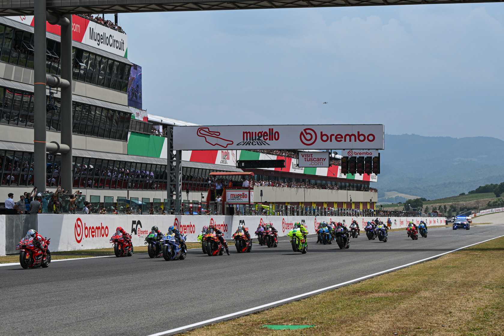
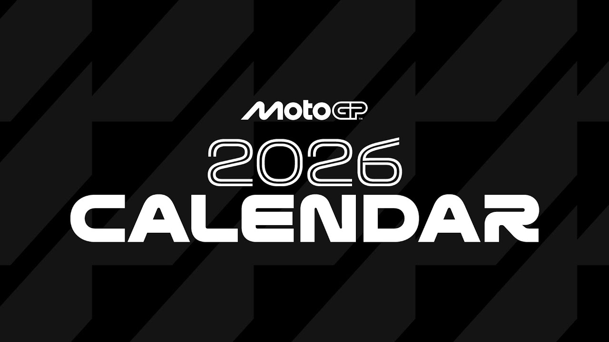
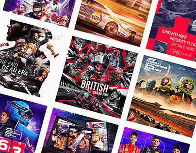

¿QUÉ ES MOTOGP?
- Moto: Se refiere a las motocicletas de competición.
- GP: Significa "Gran Premio", el nivel más alto.
- Categoría Reina: La disciplina principal del campeonato.
- Campeonato Mundial: El certamen más importante de velocidad.
- Pilotos y Motos: Los mejores del mundo con tecnología punta.
- Velocidad y Emoción: Habilidad y estrategia a más de 350 km/h.
| PILOTOS | CIRCUITOS | CALENDARIO | GALERÍA | MOTOS | PROTECCIÓN |
|---|---|---|---|---|---|
 |
 |  |  |  |
 |